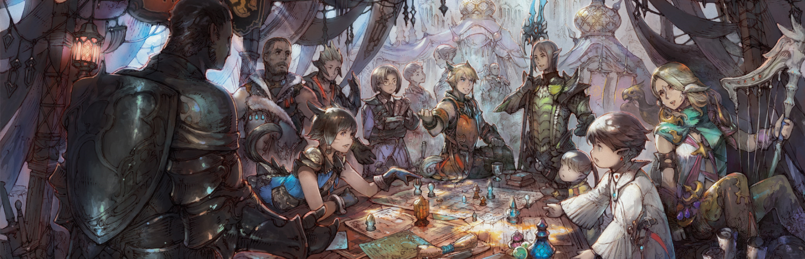

Final Fantasy

The Final Fantasy series, developed and published by Square Enix (formerly Squaresoft), is a renowned collection of role-playing games (RPGs) that first debuted in 1987. Known for its captivating storytelling, memorable characters, and immersive game worlds, Final Fantasy has captured the hearts of millions of fans worldwide. Each installment in the series offers a unique standalone story, often exploring themes of heroism, love, sacrifice, and the struggle between good and evil. Throughout its history, the series has consistently evolved its gameplay mechanics, experimenting with different battle systems, character progression, and game design. Additionally, the series is celebrated for its iconic and emotional soundtracks, composed by the likes of Nobuo Uematsu and other talented musicians. With a legacy spanning over three decades, the Final Fantasy series has established itself as a benchmark for RPGs and continues to captivate new and returning players alike.
Pros
- Engaging storytelling: Each game in the series offers a unique and captivating story that keeps players emotionally invested in the game world and its characters.
- Memorable characters: The series is known for its diverse and well-developed characters, which helps players form strong emotional connections and enhances their overall gaming experience.
- Richly detailed worlds: The intricate and immersive game worlds, complete with deep lore, provide players with a sense of wonder and a strong incentive to explore.
- Innovative gameplay: Final Fantasy games have consistently introduced new gameplay mechanics, keeping each installment fresh and exciting for both new and returning players.
- Iconic music: The series features memorable and emotional soundtracks, which greatly enhance the overall experience and have become synonymous with Final Fantasy.
- High production values: Square Enix is known for its commitment to quality, ensuring that each game in the series features top-notch graphics, voice acting, and game design.
- Strong fan community: The passionate fanbase has generated a wealth of fan art, fan fiction, and discussions that contribute to the series' enduring popularity.
Cons
- Complexity: The series can be overwhelming for newcomers due to its extensive lore, numerous installments, and sometimes complex gameplay mechanics.
- Inconsistency in quality: While the series has many highly acclaimed entries, there are some that have received mixed reviews, leading to a varied reception.
- Time investment: Many Final Fantasy games require a significant amount of time to complete, which can be a barrier for players with limited gaming time.
- High expectations: Given the series' long-standing reputation and fanbase, new installments are often met with high expectations, which can lead to disappointment if they fail to meet those expectations.
- Frequent changes in gameplay mechanics: While innovation is a strength of the series, it can also be a drawback for players who prefer consistency or who particularly enjoyed the mechanics of a specific game.
- Limited accessibility: Some older games in the series may not be readily available on modern gaming platforms, making it difficult for new players to experience the entire series.
- Focus on console gaming: The series has traditionally been developed for consoles, and while some games have been ported to PC and mobile platforms, the primary focus on console gaming may be a drawback for those who primarily game on other platforms